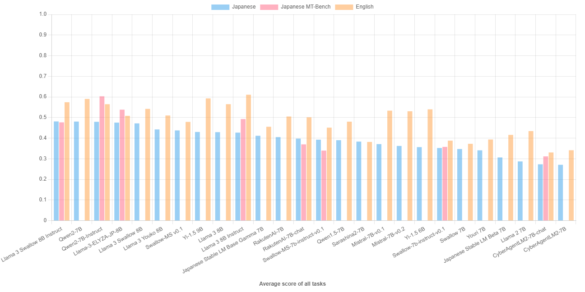
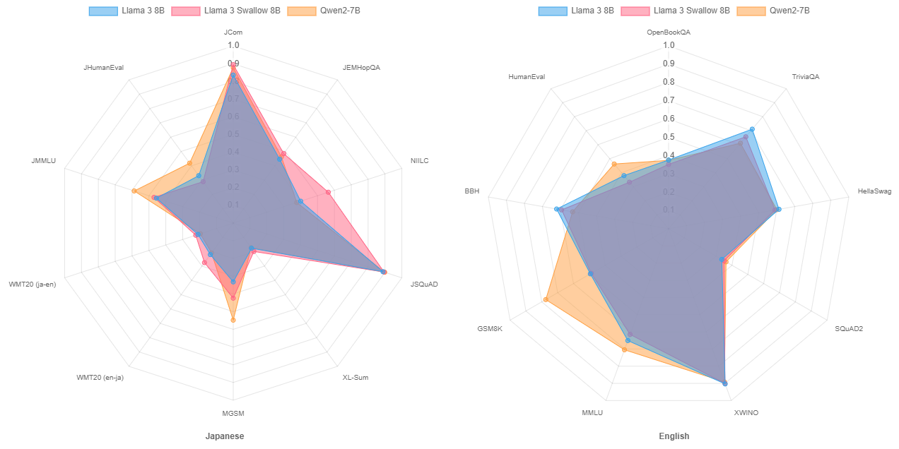
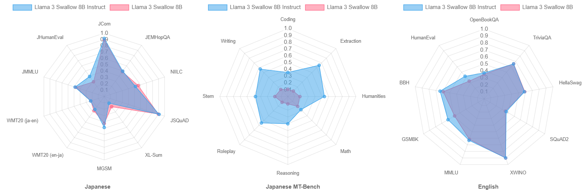
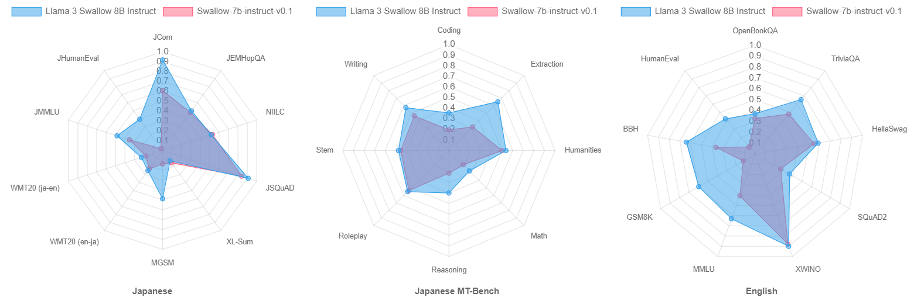
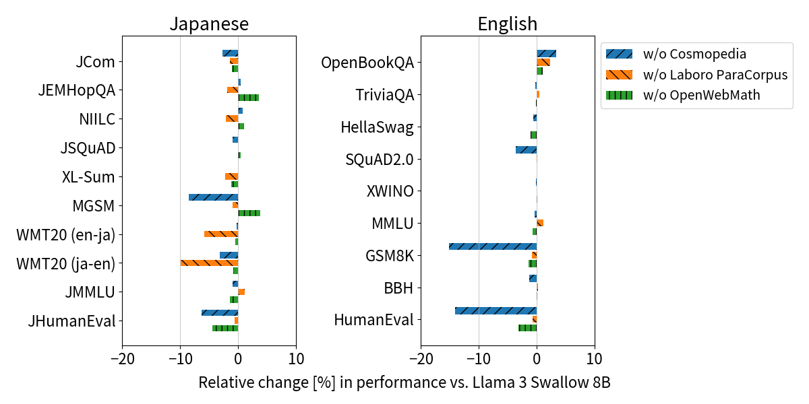
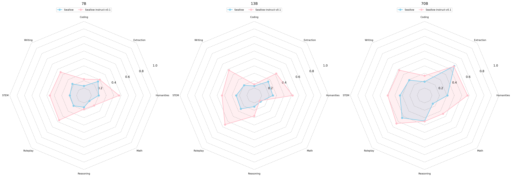
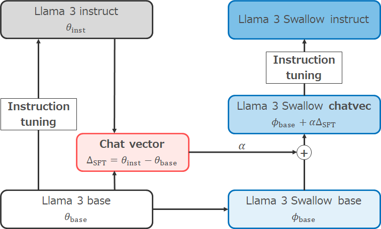

July 1, 2024
Llama 3 Swallow
Llama 3 Swallow is a series of large language models that enhance Japanese capability of Llama 3 8B and 70B. The parameters (weights) of the models are publicly available on HuggingFace. Llama 3 Swallow can be used for research and commercial purposes under the terms of the Meta Llama 3 License. Built with Meta Llama 3.

Legacy (higher-performance models have been developed and released)
Models
Changelog
- 2024-07-01: Released Llama-3-Swallow-8B-v0.1, Llama-3-Swallow-8B-Instruct-v0.1, Llama-3-Swallow-70B-v0.1, and Llama-3-Swallow-70B-Instruct-v0.1.
General Information
Llama 3 Swallow is a series of large language models (LLMs) developed by a research team consisting of the Okazaki laboratory and Yokota laboratory of the School of Information Science and Technology at the Tokyo Institute of Technology and the National Institute of Advanced Industrial Science and Technology (AIST). We used the Swallow corpus for continual pre-training to further improve Japanese language proficiency of Meta Llama 3 8B and 70B, which have shown high performance among open LLMs. In performance evaluation conducted by the research team, the model has shown top-class performance in Japanese and English language understanding and generation tasks among open LLMs (as of July 2024). We released 8B and 70B base models (base) trained by continual pre-training and 8B and 70B instruction-tuned models (instruct). These models can be downloaded from Hugging Face.
The license of Swallow is inherited from the Meta Llama 3 License of Llama 3. You may use it for research and commercial purposes as long as you comply with this license.
Evaluation
We conducted benchmark experiments on major LLMs with less than 10B parameters. We show a bar chart below where LLMs are sorted in order of average score for Japanese understanding and generation tasks (for details of the evaluation, please refer to Japanese LLM Evaluation). The average score of Llama 3 Swallow 8B Instruct on the Japanese understanding and generation tasks is the highest, the same as Qwen2 7B (base); the top five LLMs are very close in performance, although there are slight differences in scores. The average score of the English understanding and generation tasks is 3.7 points lower than that of Llama 3 8B Instruct, but the Llama 3 Swallow 8B Instruct ranked at the fourth position. On the Japanese multi-turn dialogue tasks (Japanese MT-Bench), the Qwen2 7B Instruct outperforms the others, but again, the Llama 3 Swallow 8B Instruct also ranked at the fourth position.

We then examine the effects of continual pre-training. The figure below shows radar charts of the scores on the language understanding and generation tasks for Llama 3 8B and Llama 3 Swallow 8B, the models before and after continual pre-learning, as well as for Qwen2 7B, which shows high performance among the base models. The figure shows that that continual pre-training improves performance on tasks related to knowledge, especially in the Japanese question-answering task (NIILC), where we can observe a significant increase in the accuracy of answers. There is also a slight improvement in performance for mathematics (MGSM) and machine translation (WMT20). These trends have also been observed in continual pre-training of Llama 2 and Mistral, following the characteristics of the continual pre-training of Swallow models. Although we observe performance degradation in the English language understanding and generation task because of continual pre-training, the degree of degradation is low. Although Qwen2 7B outperforms Llama 3 Swallow 8B in code generation (JHumanEval and HumanEval), examinations (JMMLU and MMLU), and mathematics (MGSM and GSM8K), Llama 3 Swallow 8B outperforms Qwen2 7B in other Japanese tasks. We will examine the factors that cause the difference in performance for code generation, examinations, and mathematics, as well as how and why we fill the gap in these tasks through continual pre-training.

In addition, we examine the effects of instruction tuning. The figure below shows radar charts of scores on the language understanding and generation tasks (in Japanese and English) and the Japanese multi-turn dialogue task (Japanese MT-Bench) for the Llama 3 Swallow 8B and Llama 3 Swallow 8B Instruct models, the models before and after instruction tuning. In the Japanese language understanding and generation tasks, the average score for the instruction tuning model was 0.9 points higher than that of the base model because of the improvement in the code generation task (JHumanEval), although whether we observe an improvement or decrease in performance depends on the task. In the English language understanding and generation task, more tasks improved in score; the average score was improved by 3.2 points. Note that we specially evaluate the performance of the base model on the Japanese multi-turn dialogue task (Japanese MT-Bench) whereas we usually omit the evaluation on Japanese MT-Bench for base models because a base model built only by (continual) pre-training has not acquired much ability of instruction-following and dialogue. The results in the radar chart in the center below indicate that the base model was in fact unable to solve any MT-Bench tasks, and that instruction tuning enhanced it to solve the tasks in Japanese MT-Bench. These results suggest the effect of instruction tuning.

Finally, let us compare Swallow-7b-instruct-v0.1 (an improved instruction tuning version of the original Swallow) with Llama 3 Swallow 8B Instruct. Although a simple comparison is not possible because the number of parameters in the model has increased by 1B, Llama 3 Swallow 8B Instruct is superior in almost all tasks, as the radar charts below show. As we will explain later, we believe that the improvements of the continual pre-training corpus and the instruction tuning data are one of the reasons, but this is probably attributed to the performance improvement from Llama 2 to Llama 3.

The Swallow project is independently conducting evaluation experiments on publicly available LLMs in parallel with the development of the LLMs, in order to consider the strategy for the development of high-performance LLMs. Please refer to Japanese LLM evaluation for the results of all evaluation experiments and experimental setups, including the evaluation results presented on this website. Each of the published LLMs has its own characteristics. We hope that this information will be useful for selecting an LLM and for developing an LLM that is strong in Japanese.
Method
Llama 3 Swallow is constructed in the following steps:
- Llama 3 Swallow Base: We perform continual pre-training on the base model of Llama 3 to add Japanese knowledge to the model.
- Llama 3 Swallow Instruct: We perform instruction tuning on Llama 3 Swallow Base to train the ability to follow instructions and coversation.
We incorporated these new features in addition to our previous attempts.
No vocabulary expansion from Llama 3
Unlike the original Swallow (based on Llama 2) and Swallow-MS (based on Mistral), the Llama 3 Swallow series does not perform vocabulary expansion (adding Japanese characters and subwords to the lexicon). While vocabulary expansion has advantages such as faster LLM training/generation speed and more natural handling of Japanese, it also has disadvantages such as task performance degradation and difficulty in model merging. Therefore, we carefully examined the necessity of vocabulary expansion before starting the development of Llama 3 Swallow.
The table shows the number of (single-character) tokens in the vocabulary of Llama 2, Mistral, and their vocabulary-expansion models, as well as the numbers of hiragana, katakana, and CJK-integrated kanji characters. Llama 3 has a larger vocabulary than Llama 2 and Mistral and includes more Japanese characters. Therefore, we added 48,000 subwords from the Japanese corpus to the Llama 3 vocabulary as a preliminary experiment, and found that the sequence length of a text with the same number of characters was reduced by 20% (i.e., inference can be 1.25 times faster). Thus, although there is an effect of expanding Llama 3’s vocabulary, the effect is rather limited compared to Llama 2’s 42% reduction (1.72x faster) and Mistral’s 38% reduction (1.62x faster). We decided not to expand the vocabulary.
| Model | Vocabulary size | Hiragana (characters) | Katakana (characters) | CJK Kanji (characters) |
|---|---|---|---|---|
| Llama 2 | 32,000 | 61 | 76 | 700 |
| Swallow (vocab expansion) | 43,176 | 83 | 87 | 2,832 |
| Mistral | 32,000 | 58 | 76 | 1,456 |
| Swallow-MS (vocab expansion) | 42,880 | 83 | 87 | 3,208 |
| Llama 3 | 118,256 | 75 | 83 | 2,314 |
| Actual letters | 96 | 96 | 20,911 |
Improving the datasets for continual pre-training
Although the original Swallow and Swallow-MS showed high performance in tasks that required knowledge of the Japanese language, they were weak in arithmetic reasoning and code generation. Therefore, we improved the datasets for continual pre-training in the development of Llama 3 Swallow, with the goal of strengthening these capabilities and making LLM usable for general purposes. Specifically, primarily using the Swallow corpus of web texts and RefinedWeb (Penedo et al., 2023), we also used Japanese and English Wikipedia, Cosmopedia (the textbook-like text), Laboro ParaCorpus for bilingual texts collected from the web, OpenWebMath (Paster et al. 2024) and AlgebraicStack (Azerbayev et al., 2024) for mathematical source code. Note that we excluded the web_samples_v{1,2} subset of Cosmopedia to avoid duplication with RefinedWeb.
To quantify the effect of these improvements, we measured the relative difference in scores (so-called ablation analysis) between the Llama 3 Swallow 8B model and the model trained without Cosmopedia, Laboro ParaCorpus, and OpenWebMath, respectively. The underlying idea is that, if the score decreases after removing a particular text, it may indicate its contribution to the task. We show the results below. First, we find that Cosmopedia contributes to Japanese-English arithmetic reasoning (MGSM, GSM8K) and code generation (JHumanEval, HumanEval). Cosmopedia used lecture outlines, math texts, source code, and so on as writing material and synthesized a “textbook-like” text by using Mixtral-8x7B-Instruct. The effectiveness of textbook-like texts has been reported (Abdin et al., 2024; Penedo et al., 2024), and our analysis is consistent with these findings. Next, Laboro ParaCorpus contributes to machine translation (WMT20), and we were able to replicate the bilingual text validity (Fujii et al., 2024) reported for the first version of Swallow. Finally, OpenWebMath made only a minor contribution to code generation, probably due to its inclusion in Cosmopedia’s writing material.

Improving the dataset for instruction tuning
We used machine-translated versions of English instructional data, including OpenAssistant1 , for instruction tuning of the first Swallow, but upon later investigation, we recognized problems such as translation errors, awkward Japanese generations, and the loss of the ability of multi-turn dialogue. However, due to the high cost of manually creating and modifying the dataset, we adopted an approach called imitation learning (Gudibande et al., 2023), in which the dataset is synthesized from an existing LLM. Although imitation learning does not transfer the knowledge and abilities of the original LLM, it is known to facilitate human-preferred responses by transferring the ability to follow instructions and response styles. Specifically, we generate responses by giving the instruction of llm-jp/oasst1-21k-ja, which was translated from OpenAssistant1 (Köpf et al., 2023), to Mixtral-8x7B-Instruct-v0.1. The reason for choosing Mixtral was not only that it achieved the good performance in the English MT-Bench but also that it fits this usage with the permissive license (Apache 2.0 license). When we manually checked the response text, we found that it showed the good ability to follow instructions and fluency in the output text. On the other hand, it tended to respond in English. Therefore, we adjusted the prompt and sentence generation parameters to improve the percentage of responses in Japanese from 30% to 50%. The generated data set was also manually examined, and inappropriate response sentences were removed using a heuristic filter. Furthermore, based on a previous example of the effectiveness of using English instructions together with Japanese LLMs, we decided to use the high-quality data extracted from the dialogue tree of OpenAssistant2. Swallow-instruct-v0.1, built using these datasets, showed significant improvements in Japanese MT-Bench scores at all model sizes (7B, 13B, and 70B), confirming that the imitation learning data improved instruction responsiveness and Japanese fluency. We used this dataset for instruction tuning of Llama 3 Swallow.

Instruction tuning with chat vector
There are situations where we want to use a base model with high Japanese capability for research and applications. We also want to learn a good practice of instruction tuning in the Swallow project. For this reason, we apply continual pre-training on the base model instead of the instruction-tuned model. However, the original Llama 3’s instruction tuning is not only by supervised fine tuning (SFT), but also by rejection sampling, Proximal Policy Optimization (PPO), and Direct Preference Optimization (DPO). We want to utilize the high-quality instruction-tuning and safety measures of the Llama 3 Instruct model, but discard these efforts if we apply continual pre-training on the base model.
Therefore, we performed instruction tuning using chat vector (Huang et al., 2024) and SFT. Chat vectors is an idea that tries to obtain the parameter changes corresponding to instruction tuning by finding the difference between the parameter vectors of the models before and after instruction tuning. Based on this idea, by subtracting the parameter vector of the Llama 3 base from that of the Llama 3 instruct, we can obtain the chat vector corresponding to the instruction tuning of Llama 3. After enhancing the Japanese capability of Llama 3 base through continual pre-training and building the Llama 3 Swallow base model, we added the chat vectors to the base model to simulate the original Llama 3’s instruction tuning. Then, we applied SFT on the the instruction tuning data described earlier to build the Llama 3 Swallow instruct model.

References
- Marah Abdin, et al. 2024. Phi-3 technical report: A highly capable language model locally on your phone. arXiv:2404.14219.
- Zhangir Azerbayev, Hailey Schoelkopf, Keiran Paster, Marco Dos Santos, Stephen Marcus McAleer, Albert Q. Jiang, Jia Deng, Stella Biderman, Sean Welleck. 2024. Llemma: An Open Language Model for Mathematics. ICLR.
- Kazuki Fujii, Taishi Nakamura, Mengsay Loem, Hiroki Iida, Masanari Ohi, Kakeru Hattori, Hirai Shota, Sakae Mizuki, Rio Yokota, Naoaki Okazaki. 2024. Continual Pre-Training for Cross-Lingual LLM Adaptation: Enhancing Japanese Language Capabilities. arXiv:2404:177790.
- Shih-Cheng Huang, Pin-Zu Li, Yu-Chi Hsu, Kuang-Ming Chen, Yu Tung Lin, Shih-Kai Hsiao, Richard Tzong-Han Tsai, Hung-yi Lee. 2024. Chat Vector: A Simple Approach to Equip LLMs With New Language Chat Capabilities. ACL.
- Keiran Paster, Marco Dos Santos, Zhangir Azerbayev, Jimmy Ba. 2024. OpenWebMath: An Open Dataset of High-Quality Mathematical Web Text. ICLR.
- Guilherme Penedo, Quentin Malartic, Daniel Hesslow, Ruxandra Cojocaru, Hamza Alobeidli, Alessandro Cappelli, Baptiste Pannier, Ebtesam Almazrouei, Julien Launay. 2024. The RefinedWeb dataset for Falcon LLM: Outperforming curated corpora with web data only. NeurIPS.
- Guilherme Penedo, Hynek Kydlíček, Loubna Ben allal, Anton Lozhkov, Margaret Mitchell, Colin Raffel, Leandro Von Werra, Thomas Wolf. 2024. The FineWeb Datasets: Decanting the Web for the Finest Text Data at Scale. arXiv:2406.17557.
- Andreas Köpf, et al. 2024. OpenAssistant Conversations - Democratizing Large Language Model Alignment. NeurIPS.
- Arnav Gudibande, Eric Wallace, Charlie Snell, Xinyang Geng, Hao Liu, Pieter Abbeel, Sergey Levine, Dawn Song. 2023. The False Promise of Imitating Proprietary LLMs. arXiv:2305.15717.
Acknowledgements
Research and development of Swallow was supported by a project, JPNP18002, commissioned by the New Energy and Industrial Technology Development Organization (NEDO). In addition, the experiments of continual pre-training of LLMs was supported by the “Support Program for Building Large Language Models” of the AI Bridging Cloud Infrastructure (ABCI) developed and operated by the National Institute of Advanced Industrial Science and Technology (AIST). We used the datasets and findings released by the Japanese LLM Study Group (LLM-jp) in the evaluation experiments.